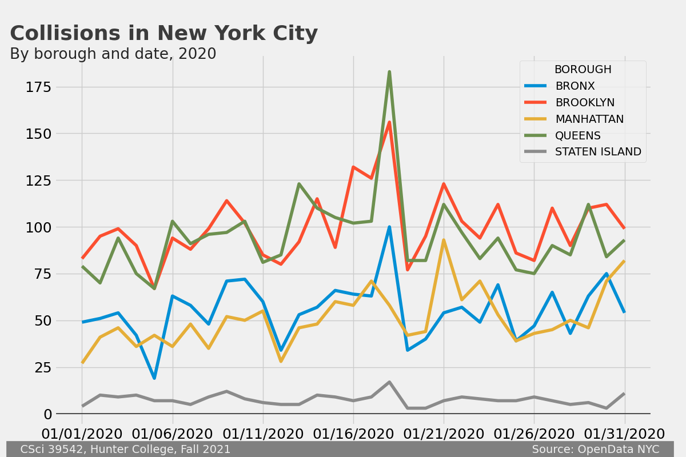
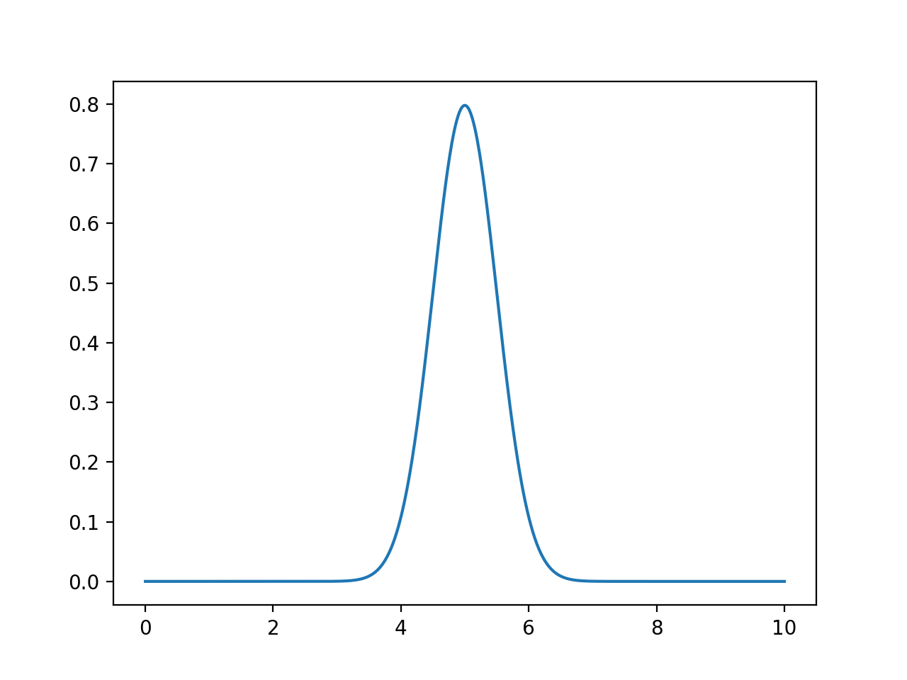
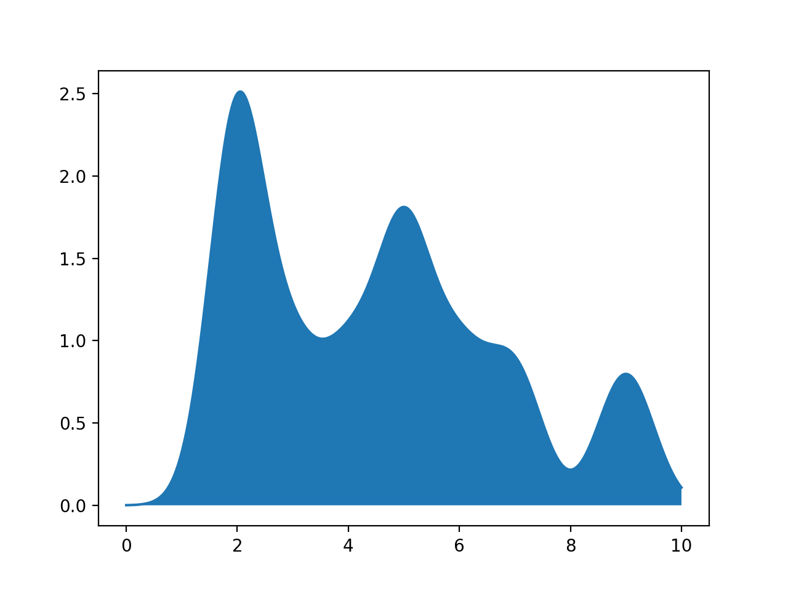
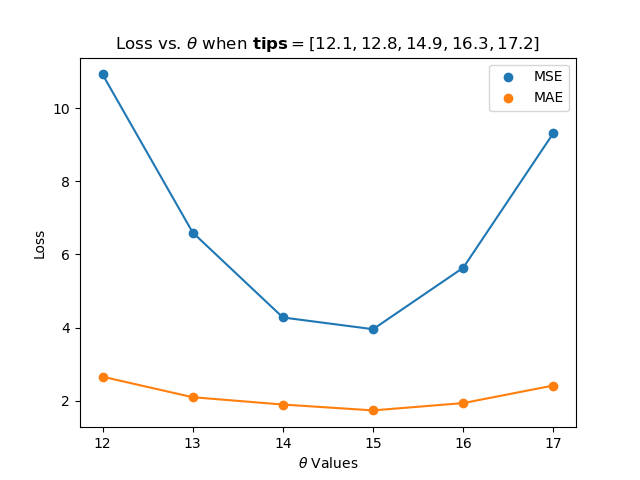
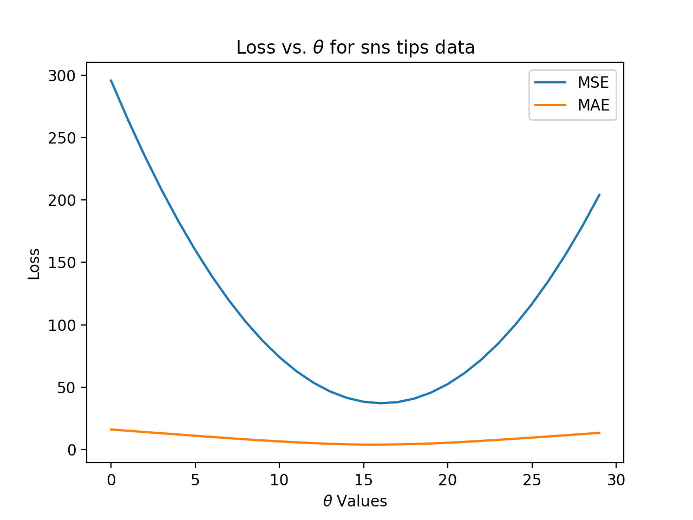
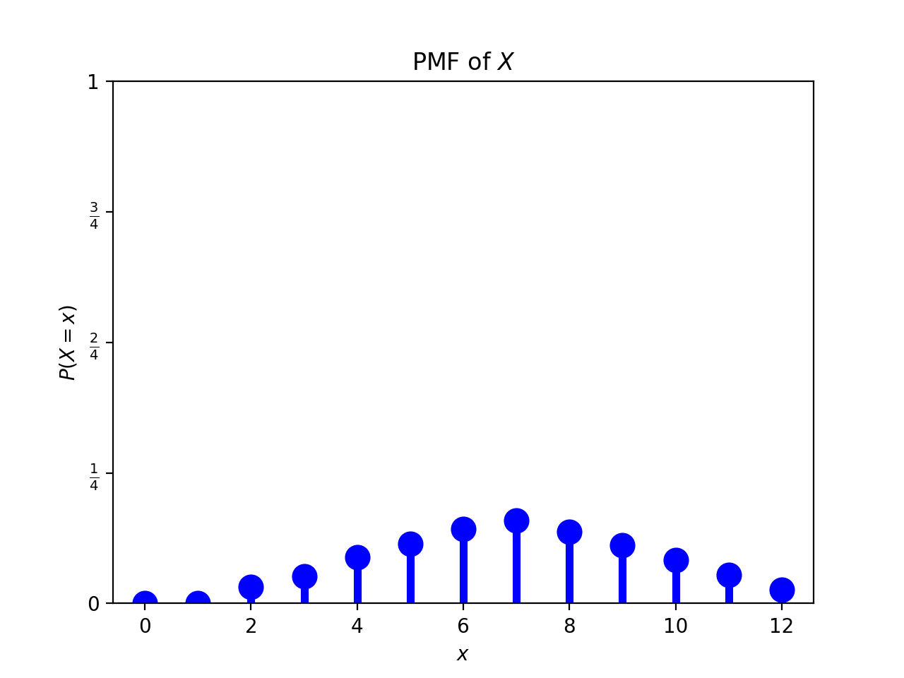

Five of the quizzes assess your programming skill using HackerRank. These quizzes are 30 minutes long and cannot be repeated. Links will be available on Blackboard to access the quiz.
There are no make-up quizzes. Instead, your score on the final exam will replace missing quiz grades (the final exam will also replace a quiz grade when you take the quiz but do better on the final exam). See the syllabus for additional information on how grades are calculated.
Quiz 1: Due 4pm, Friday, 27 August. The first quiz asks that you confirm that you have read the Hunter College's Academic Integrity Policy:
Hunter College regards acts of academic dishonesty (e.g., plagiarism, cheating on examinations, obtaining unfair advantage, and falsification of records and official documents) as serious offenses against the values of intellectual honesty. The College is committed to enforcing the CUNY Policy on Academic Integrity and will pursue cases of academic dishonesty according to the Hunter College Academic Integrity Procedures.
Quiz 3: Due 4pm, Friday, 3 September. The quiz covers data sampling from the third lecture and the reading: DS 100: Chapter 2 (Design Intro) and includes Python review questions.
Quiz 4: Due 4pm, Friday, 10 September. The quiz covers Python string methods and Python data types from the second and third lectures and the reading: DS 100: Section 13.1 (Python String Methods) and subsetting dataframes from DS 100: Chapter 7 (Data Tables in Python).
Quiz 5: Due 4pm, Tuesday, 14 September.
This is a coding quiz on HackerRank focusing on the Python constructs and package from the first two weeks. You will be sent an invitation to the email you use for Gradescope for this quiz. You have 30 minutes to complete the quiz, and the quiz cannot be repeated.
Quiz 6: Due 4pm, Tuesday, 21 September.
Today's topic is regular expressions from Lecture #3 and DS 100: Sections 13.2-13.3 (Regular Expressions). Quiz 7: Due 4pm, Friday, 24 September.
This quiz covers SQL from Lectures #4, 5 & 6 and DS 100: Chapter 6 (Relational Databases & SQL). Quiz 8: Due 4pm, Tuesday, 28 September.
This quiz covers DataFrames from Pandas, covered in Lectures #4, 5 & 6 and DS 100: Chapter 7 (Data Tables in Python). Quiz 11: Due 4pm, Friday, 8 October.
The focus in on data visualiation as discussed in Lectures #10 and #11 and DS 100: Chapter 11 (Data Visualization). Quiz 12: Due 4pm, Friday, 15 October.
The quiz covers loss functions from Lectures #10 & #11 and the reading: DS 100, Sections 3.2-3.4 (Loss Functions).
Quiz 13: Due 4pm, Tuesday, 19 October.
The focus of this quiz is probability and risk, covered in Lecture #12,
DS 8: Chapter 9 (Randomness), and
DS 100: Chapter 16 (Probability & Generalization).
Quiz 14: Due 4pm, Friday, 22 October.
The quiz covers gradient descent from Lecture #13 and the reading: DS 100: Chapter 17 (Gradient Descent).
More to come...
Homework
Unless otherwise noted, programs are submitted on the course's Gradescope site and are written in Python.
Also, to receive full credit, the code should be compatible with Python 3.6 (the default for the Gradescope autograders).
All students registered by Monday, 23 August were sent a registration invitation to the email on record on their Blackboard account. If you did not receive the email or would like to use a different account, post to Help::Individual Questions (on the left hand menu when logged into the course site on Blackboard). Include in your post that you not receive a Gradescope invitation, your preferred email, and we will manually generate an invitation. As a default, we use your name as it appears in Blackboard/CUNYFirst (to update CUNYFirst, see changing your personal information). If you prefer a different name for Gradescope, include it in your post, and we will update the Gradescope registration.
To get full credit for a program, the file must include in the opening comment:
"""
Name: Thomas Hunter
Email: thomas.hunter.1870@hunter.cuny.edu
Resources: Used python.org as a reminder of Python 3 print statements.
"""
Program 1: Hello, world. Due noon, Friday, 27 August.
Submit a Python program that prints: Program 2: Senators' Names. Due noon, Monday, 30 August.
Write a program, using the For example, if the file was legislators-current.csv with the first 3 lines of:
Write a program that asks the user for the name of an input CSV file and the name of an output CSV file. The program should open the file name provided by the user. Next, the program should select rows where the field For example, if the file was legislators-current.csv with the first 3 lines of:
Note: if you use the legislators CSV file above, your output file should have 101 lines: 1 line of header information and 100 rows of data.
Program 4: ELA Proficiency. Due noon, Thursday, 2 September.
Write a program that asks the user for the name of an input CSV file and the name of an output CSV file. The program should open the file name provided by the user.
Next, the program should select rows where the field
Then a sample run of the program:
Program 5: URL Collection. Due noon, Friday, 3 September.
Write a program that asks the user for the name of an input HTML file and the name of an output CSV file. Your program should use regular expressions (see Chapter 12.4 for using the For example, if the input file is:
Program 6: Regex on Restaurant Inspection Data. Due noon, Thursday, 9 September.
Use regular expressions (covered in Lecture 3 & DS 100: Sections 12.2-3) to clean restaurant inspection datasets that we will use in later SQL programs.
Your program should:
For example, if the file was restaurants30July.csv with the first 3 lines of:
Program 7: Neighborhood Tabulation Areas Due noon, Friday, 10 September.
The package pandasql provides an easy way to use SQL queries directly on a Pandas DataFrame. (You may need to install it in your hierarchy (e.g.
Once installed, you can run queries via the function For this program, ask the user for the input and output file names.
You should assume that the input file contains the New York City
Neighborhood Tabulation Areas such as
nynta.csv.
Use Program 8: Restaurant SQL Queries. Due noon, Monday, 13 September.
Your program should ask for the input file name (must include .csv) and then for an output file prefix (must not include any extension). For example, with
Using SQL (see DS 100: Section 5.2), extract the following information from a restaurant inspection dataset (a small file of inspections from 30 July is available: restaurants30July.csv):
Note: The file extension names are case-sensitive, so, the autograder will not except Program 9: Aggregating Restaurant Data (SQL).
Due noon, Tuesday, 14 September.
Using the more advanced SQL commands from DS 100: Section 5.1 (e.g. Your program should ask for the input file name (must include .csv) and then for an output file prefix (must not include any extension).
For example, if you entered The file The file The file Program 11: Joining Restaurant & NTA Data. Due noon, Tuesday, 21 September.
For testing, a small file of inspections from 30 July is available: restaurants30July.csv and the Neighborhood Tabulation Areas (NTA):
nta.csv.
Your program should ask for two input file name (must include .csv) and then for an output file prefix (must not include any extension). For example, with
Program 12: MTA Ridership. Due noon, Thursday, 23 September.
In the next lecture, we will be summarizing time-series data and using a
cleaned version of MTA subway and bus ridership, inspired by Oldenburg's NYC Transit Turnstile Data.
Write a program that asks the user for the name of an input CSV file and the name of an output CSV file. The program should open the file name provided by the user, which you can assume will include the column names:
For example, if the file was the 2020 data for Staten Island, rmta_trunc_staten_island.csv with the first 3 lines of:
Program 14: Library Cleaning. Due noon, Monday, 27 September.
Write two functions that will be used to clean the OpenData NYC dataset of Libraries in New York City (downloaded as CSV file). The first three lines of the CSV file look like:
Note: you should submit a file with only the standard comments at the top, and these two functions. The grading scripts will then import your functions for testing. A sample test program that assumes your program is called Program 15: Plotting Challenge. Due noon, Tuesday, 28 September.
The goal is to create a plot of NYC OpenData Motor Vehicle Collisions that follows this style. For example, here is the plot for January 2020 dataset:

Your program should begin by asking the user for input and output files. It should be written to take any dataset from the NYC OpenData Motor Vehicle Collisions and produce an image that matches this style. The resulting image should be saved to the output file specified by the user.
Hint: to transform the data into separate columns (i.e. "unstack"/pivot the groups to be columns) for the daily number of collisions for each borough:
Program 16: Choropleth Attendance Cleaning. Due noon, Thursday, 30 September.
In lecture, we wrote a program, schoolsChoropleth.py, using the school district files used in Programs 10 & 11 to make a choropleth map of top English Languange Arts scores, by district, in New York City:
For this program, write a program that will clean district school attendance data so that we can use the same visualization to see attendance for different districts.
Your stand-alone program should ask the user for the input file name, the output file name, as well as the grade and school year to use as filters. For example,
a sample run of the program on public-district-attendance-results-2014-2019.csv:
Hints:
Program 17: Grouping ELA/Math by Districts. Due noon, Friday, 1 October.
Your program should build on the classwork from Lectures #6 and #9 to build a pivot table, grouped by district and test subject, of the percentage of students that are proficient in each (i.e. score 3 or 4 on the exam). Your program should ask the user for two input CSV files and print a pivot table.
Hints:
Program 18: Log Scale. Due noon, Monday, 4 October.
In Lecture #9 and Section 11.5, we used log scale to visualize data. Since the logarithm function is not defined on non-positive data, we are first going to write a function that removes any tuple that has a 0 or negative value. Our second function transformed the cleaned data to its log values.
Write two functions that to be used to display data on a log-scale. Each function takes and returns two iterables of numeric values (e.g. a Series, np.array, or list restricted to numeric values).
Each function takes as input a row of the table:
For example, if
Note: you should submit a file with only the standard comments at the top, and these two functions. The grading scripts will then import your functions for testing. A sample test program that assumes your program is called
Program 19: Smoothing with Gaussians. Due noon, Tuesday, 5 October.
In Lecture #9 and Section 11.5, we used smoothing to visualize data. For this program, write a function that takes two arguments, an Numpy array of x-axis coordinates, and a list of numeric values, and returns the corresponding y-values for the sum of the gaussian probability distribution functions (pdf's) for each point in the list.
For example, calling the function:

since there is only one point given (namely 5), the returned value is the probability density function centered at 5 (with For example, calling the function:

since the there are 10 points given, the function computes the probability density function centered at each of the points, across all the values in
Note: you should submit a file with only the standard comments at the top, and this function. The grading scripts will then import your function for testing.
Hint: Include only the function you need (such as Program 20: Loss Functions for Tips. Due noon, Thursday, 7 October.
Using the functions mean squared loss function For example, calling the function:

For example, calling the function:

Note: you should submit a file with only the standard comments at the top, and this function. The grading scripts will then import your function for testing.
Hint: Include only the libraries you need (such as Program 21: Taxi Cleaning. Due noon, Friday, 8 October.
Write a program, tailored to the NYC OpenData Yellow Taxi Trip Data, that asks the user for the name of an input CSV file and the name of an output CSV file. The program should open the file name provided by the user. Next, the program should copy the input file and create two new columns: For example, if the file, taxi_new_years_day_2020.csv, was the first of January 2020 entries downloaded from 2020 Yellow Taxi Trip Data (about 170,000 entries) with the first 3 lines of:
You should round the values stored in your new columns to the nearest tenth and save your CSV file without the indexing (i.e. Program 22: Dice Simulator. Due noon, Thursday, 14 October.
Write a function:
Since the numbers are chosen at random, the fractions will differ some from run to run. One run of the function

Note: you should submit a file with only the standard comments at the top and the function. The grading scripts will then import your function for testing.
More to come...
The required final project synthesizes the skills acquired in the course to analyze and visualize data on a topic of your choosing. It is your chance to demonstrate what you have learned, your creativity, and a project that you are passionate about. The intended audience for your project is your classmates as well as tech recruiters and potential employers.
(Learning Objective: students are able to use a Python IDE on their computer and successfully submit the work to the Gradescope system.)
Hello, world
(Learning Objective: students can successfully read and write CSV files and use the Pandas package to select rows, filtered by boolean expressions.)
pandas package, that asks the user for the name of an input CSV file and the name of an output CSV file. The program should open the file name provided by the user.
Next, the program should select rows where the field senate_class is non-empty and write the first_name and last_name to a file with the output file name provided by the user.
Then a sample run of the program:
last_name,first_name,middle_name,suffix,nickname,full_name,birthday,gender,type,state,district,senate_class,party,url,address,phone,contact_form,rss_url,twitter,facebook,youtube,youtube_id,bioguide_id,thomas_id,opensecrets_id,lis_id,fec_ids,cspan_id,govtrack_id,votesmart_id,ballotpedia_id,washington_post_id,icpsr_id,wikipedia_id
Brown,Sherrod,,,,Sherrod Brown,1952-11-09,M,sen,OH,,1,Democrat,https://www.brown.senate.gov,503 Hart Senate Office Building Washington DC 20510,202-224-2315,http://www.brown.senate.gov/contact/,http://www.brown.senate.gov/rss/feeds/?type=all&,SenSherrodBrown,SenatorSherrodBrown,SherrodBrownOhio,UCgy8jfERh-t_ixkKKoCmglQ,B000944,00136,N00003535,S307,"H2OH13033,S6OH00163",5051,400050,27018,Sherrod Brown,,29389,Sherrod Brown
Cantwell,Maria,,,,Maria Cantwell,1958-10-13,F,sen,WA,,1,Democrat,https://www.cantwell.senate.gov,511 Hart Senate Office Building Washington DC 20510,202-224-3441,http://www.cantwell.senate.gov/public/index.cfm/email-maria,http://www.cantwell.senate.gov/public/index.cfm/rss/feed,SenatorCantwell,senatorcantwell,SenatorCantwell,UCN52UDqKgvHRk39ncySrIMw,C000127,00172,N00007836,S275,"S8WA00194,H2WA01054",26137,300018,27122,Maria Cantwell,,39310,Maria Cantwell
And the first three lines of Enter input file name: legislators-current.csv
Enter output file name: senatorNames.csv
senatorNames.csv would be:
Note: if you use the legislators CSV file above, your output file should have 101 lines: 1 line of header information and 100 rows of data.
first_name,last_name
Sherrod,Brown
Maria,Cantwell
senate_class is non-empty and write the first_name and compute the age based on the birthday field as of the first of the year. Your program should write out a new CSV file (with the name provided by the user) with the two columns: first_name and age.
Then a sample run of the program:
last_name,first_name,middle_name,suffix,nickname,full_name,birthday,gender,type,state,district,senate_class,party,url,address,phone,contact_form,rss_url,twitter,facebook,youtube,youtube_id,bioguide_id,thomas_id,opensecrets_id,lis_id,fec_ids,cspan_id,govtrack_id,votesmart_id,ballotpedia_id,washington_post_id,icpsr_id,wikipedia_id
Brown,Sherrod,,,,Sherrod Brown,1952-11-09,M,sen,OH,,1,Democrat,https://www.brown.senate.gov,503 Hart Senate Office Building Washington DC 20510,202-224-2315,http://www.brown.senate.gov/contact/,http://www.brown.senate.gov/rss/feeds/?type=all&,SenSherrodBrown,SenatorSherrodBrown,SherrodBrownOhio,UCgy8jfERh-t_ixkKKoCmglQ,B000944,00136,N00003535,S307,"H2OH13033,S6OH00163",5051,400050,27018,Sherrod Brown,,29389,Sherrod Brown
Cantwell,Maria,,,,Maria Cantwell,1958-10-13,F,sen,WA,,1,Democrat,https://www.cantwell.senate.gov,511 Hart Senate Office Building Washington DC 20510,202-224-3441,http://www.cantwell.senate.gov/public/index.cfm/email-maria,http://www.cantwell.senate.gov/public/index.cfm/rss/feed,SenatorCantwell,senatorcantwell,SenatorCantwell,UCN52UDqKgvHRk39ncySrIMw,C000127,00172,N00007836,S275,"S8WA00194,H2WA01054",26137,300018,27122,Maria Cantwell,,39310,Maria Cantwell
And the first three lines of Enter input file name: legislators-current.csv
Enter output file name: senatorAge.csv
senatorAge.csv would be:
since that was their ages as of the start of the year: January 1, 2021.
first_name,age
Sherrod,68
Maria,62
(Learning Objective: students can successfully filter formatted data using standard Pandas operations for selecting data.)
Grade is equal to 3 and the Year is equal to 2019 and write all rows that match that criteria to a new CSV file.
where the file Enter input file name: school-ela-results-2013-2019.csv
Enter output file name: ela2013.csv
school-ela-results-2013-2019.csv is extracted from NYC Schools Test Results (and truncated version of roughly the first 1000 lines for testing). The first lines of the output file would be:
School,Name,Grade,Year,Category,Number Tested,Mean Scale Score,# Level 1,% Level 1,# Level 2,% Level 2,# Level 3,% Level 3,# Level 4,% Level 4,# Level 3+4,% Level 3+4
01M015,P.S. 015 ROBERTO CLEMENTE,3,2019,All Students,27,606,1,3.7,7,25.9,18,66.7,1,3.7,19,70.4
01M019, P.S. 019 ASHER LEVY,3,2019,All Students,24,606,0,0.0,8,33.3,15,62.5,1,4.2,16,66.7
01M020,P.S. 020 ANNA SILVER,3,2019,All Students,57,593,13,22.8,24,42.1,18,31.6,2,3.5,20,35.1
Set 2: The second set of programs focuses on incorporating and analyzing rectangular data, in terms of relational databases and data frames. The goal is familiarity with these canonical representations to use as building blocks for future analysis, programs, and your project.
(Learning Objective: to use regular expressions with simple patterns to filter column data in a canonical example: scraping a website of URL's.)
re package in Python) to find all links in the input file and store the link text and URL as columns: Title and URL in the CSV file specified by the user. For the URL, strip off the leading https:// or http:// and any trailing slashes (/):
Then a sample run of the program:
<html>
<head><title>Simple HTML File</title></head>
<body>
<p> Here's a link for <a href="http://www.hunter.cuny.edu/csci">Hunter CS Department</a>
and for <a href="https://stjohn.github.io/teaching/data/fall21/index.html">CSci 39542</a>. </p>
<p> And for <a href="https://www.google.com/">google</a>
</body>
</html>
And the Enter input file name: simple.html
Enter output file name: links.csv
links.csv would be:
Title,URL
Hunter CS Department,www.hunter.cuny.edu/csci
CSci 39542,stjohn.github.io/teaching/data/fall21/index.html
google,www.google.com
(Learning Objective: The two learning objectives of this exercise are a) to give the students an opportunity to practice their newfound regular expressions (regex) skills and b) familiarize them with the restaurant inspection dataset which would be used again in the latter SQL programs.)
2125551212, some entries have extra characters and not enough digits, e.g. 212-555-12. First, use regex to check that 10 digits were entered. If not, set the value to "" (empty string) since the current data is corrupt. If the phone number does have 10 digits, use regex to parse out the given 10 digit phone number DDDDDDDDDD and re-concatenate it back into a 11 digit format: 1-digit country code (as 1), 3-digit area code, and a 7-digit telephone number, so that the final output looks like: +1-DDD-DDD-DDDDD.
MM/DD/YYYY to YYYY/MM/DD.
DBA, please create a new column called "restaurant_name" which reformats the data in the original column from all upper case to camel case. Separately, create a new Boolean column that flags True if the word Thai (not case sensitive) appears in the original restaurant name.
Then a sample run of the program:
CAMIS,DBA,BORO,BUILDING,STREET,ZIPCODE,PHONE,CUISINE DESCRIPTION,INSPECTION DATE,ACTION,VIOLATION CODE,VIOLATION DESCRIPTION,CRITICAL FLAG,SCORE,GRADE,GRADE DATE,RECORD DATE,INSPECTION TYPE,Latitude,Longitude,Community Board,Council District,Census Tract,BIN,BBL,NTA
41178124,CAFE 57,Manhattan,300,WEST 57 STREET,10019,2126492729,American,7/30/2021,Violations were cited in the following area(s).,09C,Food contact surface not properly maintained.,Not Critical,4,A,7/30/2021,8/1/2021,Cycle Inspection / Initial Inspection,40.76643902,-73.98332508,104,3,13900,1025451,1010477502,MN15
50111450,CASTLE CHICKEN,Bronx,5987A,BROADWAY,10471,9178562047,Chicken,7/30/2021,Violations were cited in the following area(s).,05D,Hand washing facility not provided in or near food preparation area and toilet room. Hot and cold running water at adequate pressure to enable cleanliness of employees not provided at facility. Soap and an acceptable hand-drying device not provided.,Critical,41,N,,8/1/2021,Pre-permit (Operational) / Initial Inspection,40.88993027,-73.89805316,208,11,28500,2084208,2058011033,BX29
40699339,NICK GARDEN COFFEE SHOP,Bronx,2953,WEBSTER AVENUE,10458,7183652277,Coffee/Tea,7/30/2021,Violations were cited in the following area(s).,08A,Facility not vermin proof. Harborage or conditions conducive to attracting vermin to the premises and/or allowing vermin to exist.,Not Critical,31,,,8/1/2021,Cycle Inspection / Initial Inspection,40.86759042,-73.88308647,207,11,41500,2016446,2032800061,BX05
And the first three lines of
Enter input file name: restaurants30July.csv
Enter output file name: july30filtered.csv
july30filtered.csv would be:
CAMIS,DBA,BORO,BUILDING,STREET,ZIPCODE,PHONE,CUISINE DESCRIPTION,INSPECTION DATE,ACTION,VIOLATION CODE,VIOLATION DESCRIPTION,CRITICAL FLAG,SCORE,GRADE,GRADE DATE,RECORD DATE,INSPECTION TYPE,Latitude,Longitude,Community Board,Council District,Census Tract,BIN,BBL,NTA,restaurant_name,thai_boolean
41178124,CAFE 57,Manhattan,300,WEST 57 STREET,10019,+1-212-649-2729,American,2021/07/30,Violations were cited in the following area(s).,09C,Food contact surface not properly maintained.,Not Critical,4,A,7/30/2021,8/1/2021,Cycle Inspection / Initial Inspection,40.76643902,-73.98332508,104,3,13900,1025451,1010477502,MN15,Cafe 57 ,False
50111450,CASTLE CHICKEN,Bronx,5987A,BROADWAY,10471,+1-917-856-2047,Chicken,2021/07/30,Violations were cited in the following area(s).,05D,Hand washing facility not provided in or near food preparation area and toilet room. Hot and cold running water at adequate pressure to enable cleanliness of employees not provided at facility. Soap and an acceptable hand-drying device not provided.,Critical,41,N,,8/1/2021,Pre-permit (Operational) / Initial Inspection,40.88993027,-73.89805316,208,11,28500,2084208,2058011033,BX29,Castle Chicken ,False
40699339,NICK GARDEN COFFEE SHOP,Bronx,2953,WEBSTER AVENUE,10458,+1-718-365-2277,Coffee/Tea,2021/07/30,Violations were cited in the following area(s).,08A,Facility not vermin proof. Harborage or conditions conducive to attracting vermin to the premises and/or allowing vermin to exist.,Not Critical,31,,,8/1/2021,Cycle Inspection / Initial Inspection,40.86759042,-73.88308647,207,11,41500,2016446,2032800061,BX05,Nick Garden Coffee Shop ,False
(Learning Objective: The learning objective of this exercise is to give the students an opportunity to practice their newfound SQL skills.)
pip install pandasql or pip install pandasql).
sqldf(queryName). For example, you could filter for all students in the roster.csv on the waitlist by:
import pandas as pd
import pandasql as psql
roster = pd.read_csv('roster.csv')
q = 'SELECT * FROM roster WHERE Role = "Waitlist Student"'
waitList = psql.sqldf(q)
print(waitList)
sqldf(queryName) to filter the dataset to return the NTACode and
NTAName columns, labeled as
NTA and NTA_Name, respectively. You should save the result as a CSV in the output file named by the user.
restaurantJuly2020.csv for the input and selected for the output prefix. The program should create 4 files: selectedA.csv, selected70.csv, selectedZIP.csv, and selectedAll.csv.
Grade = A to the output file prefix+"A.csv" where prefix holds the value specified by the user. SCORE > 70 to the output file prefix+"70.csv".ZIPCODE IN (10002, 10027, 10036) to the output file prefix+"ZIP.csv"DBA renamed as restaurant_name,
CUISINE DESCRIPTION renamed as cuisine_description,
BORO renamed as borough, and
GRADE and select only those entries with:
GRADE = A and ZIPCODE IN (10002, 10027, 10036) and save to the output file prefix+"All.csv".
... ALL.csv for ... All.csv.
(Learning Objective: The learning objective of this exercise is to give the students an opportunity to practice more advanced SQL skills (e.g. GROUP BY's) on a familiar dataset.)
GROUP BY's), this program find distinct restaurant names and distinct cuisines by locale. For testing, a small file of inspections from 1 August is available: brooklynJuly2021.csv.
prefix+"Restaurants.csv" where prefix holds the value specified by the user.ZIPCODE = 11224 to the output file prefix+"Cuisines11224.csv" where prefix holds the value specified by the user. ZIPCODE = 11224 (note: return the cuisine names, not the count) to the output file prefix+"Counts11224.csv" where prefix holds the value specified by the user. ASC) and saved to the output file prefix+"Boro.csv" where prefix holds the value specified by the user.brooklynJuly2021.csv and selected for the output prefix, the program should create 4 files: selectedRestaurants.csv, selectedCuisines11224.csv, selectedCounts11224.csv, and selectedBoro.csv.
The first several lines of selectedRestaurants.csv are:
DBA
1 HOTEL BROOKLYN BRIDGE
14 OLD FULTON STREET
98K
99 CENT PIZZA
ABURI SUSHI BAR
selectedCuisines11224.csv is:
(since our test file only has restaurants that serve American food in the 11224 zipcode)
cnt
American
selectedCounts11224.csv is:
CUISINE DESCRIPTION,COUNT(DISTINCT DBA)
American,3
selectedBoro.csv is:
borough,cnt_cuisine,cnt_restaurants
Brooklyn,50,384
(Learning Objective: The exercises in this program will build up to help students conceptualize and finally create a JOIN between the health inspection table and the NTA table. This is to reinforce the learning done in the last 2 SQL lectures.)
restaurantJuly2020.csv and nta.csv for the input and selected for the output prefix. The program should create 6 files:
selected1.csv,
selected2.csv,
selected3.csv,
selected4.csv,
selected5.csv, and
selected6.csv.
prefix+"1.csv" where prefix holds the value specified by the user.
prefix+"2.csv" where prefix holds the value specified by the user. (Note this will have a single column and a single value.)
prefix+"3.csv" where prefix holds the value specified by the user. (Hint: how can you use GROUP BY to organize the output?)
prefix+"4.csv" where prefix holds the value specified by the user.
(Note this will have a two rows and two columns.)
LEFT JOIN of the restaurant inspection table and NTA table. Save the results to the output file prefix+"5.csv" where prefix holds the value specified by the user.
(Hint: join on the NTA code found in both (but using slightly different names). Your output should have two columns.)
LEFT JOIN as is, do one more level of aggregation, so that the end result contains 3 columns (unique NTA code, unique NTA description, and the count distinct restaurants as grouped by the first 2 columns). Save result to the output file prefix+"6.csv" where prefix holds the value specified by the user.
(Learning Objective: to reinforce Pandas skills via use for data aggregating and data cleaning.)
date, entries, and exit. You should create a new file that has one entry for each date that consists of the sum of all entries and the sum of all exits that occur on the date. This aggegrate data should be stored in the output CSV and should contain only the three columns: date, entries, and exits, even if there are additional columns in the input CSV file.
Then a sample run of the program:
stop_name,daytime_routes,division,line,borough,structure,gtfs_longitude,gtfs_latitude,complex_id,date,entries,exits
St George,SIR,SIR,Staten Island,SI,Open Cut,-74.073643,40.643748,501,2020-01-01,2929,0
St George,SIR,SIR,Staten Island,SI,Open Cut,-74.073643,40.643748,501,2020-01-02,13073,0
St George,SIR,SIR,Staten Island,SI,Open Cut,-74.073643,40.643748,501,2020-01-03,11857,23
And the first three lines of Enter input file name: mta_trunc_staten_island.csv
Enter output file name: filteredSI.csvfilteredSI.csv would be:
date,entries,exits
2020-01-01,3128,0
2020-01-02,13707,0
2020-01-03,12507,23
Set 3: The third set of programs integrates visualization techniques with analyzing structured data sets. While the programs do not cover every visualization technique, the practice these programs provide will be directly relevant to your project.
(Learning Objective: to strengthen data processing skills using regular expressions and standard string methods.)
Each function takes as input a row of the table:
the_geom,NAME,STREETNAME,HOUSENUM,CITY,ZIP,URL,BIN,BBL,X,Y,SYSTEM,BOROCODE
POINT (-73.95353074430393 40.80297988196676),115th Street,West 115th Street,203,New York,10026,http://www.nypl.org/locations/115th-street,1055236,1018310026,997115.12977,231827.652864,NYPL,1
POINT (-73.9348475633247 40.80301816141575),125th Street,East 125th Street,224,New York,10035,http://www.nypl.org/locations/125th-street,1054674,1017890037,1002287.604,231844.894956,NYPL,1
extractLatLon(row): This function takes the values from the column the_geom and extracts the longitude and latitude from the string (they are surrounded by parenthesis and separated by a space, and returns the two as numerical values. For example, the function would return -73.95353074430393, 40.80297988196676 when applied to the first row of data.
extractTitle(row): This function concatenates the values from the columns NAME, CITY, and ZIP code into a single string, separated by a comma and space, and returns the string (to be used as the title for our visualizations).
For example, when applying this function to the first data row, the return value would be:
115th Street, New York, 10026.
p14.py
and the CSV file is called LIBRARY.csv is test14.py.
(Learning Objective: to explore and master matplotlib.pyplot commands to create data visualizations.)
where df is the DataFrame with the collisions data.boroDF = df.groupby(['BOROUGH','CRASH DATE']).count()['CRASH TIME'].unstack().transpose()
(Learning Objective: to gain competency cleaning data using pandas functions.)
If the input file starts as:
Enter input file name: public-district-attendance-results-2014-2019.csv
Enter output file name: attendanceThirdGrade2019.csv
Enter grade: 3
Enter year: 2018-19
then the output file would start:
District,Grade,Year,Category,# Total Days,# Days Absent,# Days Present,% Attendance,# Contributing 20+ Total Days,# Chronically Absent,% Chronically Absent
1,All Grades,2013-14,All Students,2088851,187879,1900972,91.0,12617,3472,27.5
1,All Grades,2014-15,All Students,2064610,171200,1893410,91.7,12295,3160,25.7
1,All Grades,2015-16,All Students,1995704,169094,1826610,91.5,12137,3206,26.4
1,All Grades,2016-17,All Students,1946012,161756,1784256,91.7,11916,3110,26.1
1,All Grades,2017-18,All Students,1946527,167998,1778529,91.4,11762,3244,27.6
1,All Grades,2018-19,All Students,1925995,175153,1750842,90.9,11593,3364,29.0
District,Grade,Year,Category,# Total Days,# Days Absent,# Days Present,% Attendance,# Contributing 20+ Total Days,# Chronically Absent,% Chronically Absent
1,3,2018-19,All Students,149871,10601,139270,92.9,876,228,26.0
2,3,2018-19,All Students,491432,21170,470262,95.7,2844,278,9.8
3,3,2018-19,All Students,254506,15395,239111,94.0,1488,274,18.4
Grade can contain both numbers and strings. Since "3" is different from the number 3, you may want to convert to strings before comparison.
(Learning Objective: to successfully combine information from multiple input files and display the results using a pivot table.)
and continues with top scoring schools for each test and each district printed.
Enter file containing ELA scores: ela_trunc.csv
Enter file containing MATH scores: math_trunc.csv
Proficiency School Name
District Subject
01 ELA 91.891892 THE EAST VILLAGE COMMUNITY SCHOOL
MATH 84.615385 P.S. 184M SHUANG WEN
02 ELA 96.825397 P.S. 77 LOWER LAB SCHOOL
MATH 98.412698 P.S. 77 LOWER LAB SCHOOL
idxmax() which returns the index of the row where the maximum occurs, instead of just the value itself. For example, if you had a DataFrame mathdf with the proficiency column already computed, the following will list all the columns for the school with the maximum profiency for each district:
mathdf = mathdf.loc[ mathdf.groupby('District')['Proficiency'].idxmax() ]
(Learning Objective: gain competency in scaling data via log transformations.)
dropNeg(xS,yS): This function takes two iterables, xS and yS of numeric values. If any entry is not positive in either iterable, that indexed value is dropped from both series. The results are returned as two separate iterables. To do this, first zip the series together, drop all the pairs with zero or negative values, and then unzip to return series with only positive values.
xS contains
[1,2,0,3,4] and
yS contains [0,-1.5,4,3,9], then the zip(xS,yS) has entries
[(1,0),(1,-1.5),(0,4),(3,3),(4,9)]. Dropping all tuples that contain non-positive values yields
[(3,3),(4,9)], and the unzipped results, [3,4] and
[3,9], are returned.
logScale(xS,yS): This function assumes that the inputted iterables contain numeric values, are positive and not null, and returns the np.log of each.
For example, when applying this function to the inputs [3,4] and
[3,9], the function returns [1.098612, 1.386294] and
[1.098612,2.19722458].
p18.py
and is test18.py.
(Learning Objective: increase understanding of smoothing and gain fluidity with using distributions for smoothing.)
computeSmoothing(xes,points): This function takes a numpy array xes and a list, points, of numeric values. For each p in points, the function should compute the normal probability distribution function (scipy.norm.pdf)
centered at loc = p with standard deviation scale = 0.5 for all values in xes. The return value is a numpy array of the sum of these at each point.
would give the plot:
xes = np.linspace(0, 10, 1000)
density = computeSmoothing(xes,[5])
plt.plot(xes,density)
plt.show()scale = 0.5) computed for each of the xes.
would give the plot:
pts = [2,2,5,5,2,3,4,6,7,9]
xes = np.linspace(0, 10, 1000)
density = computeSmoothing(xes,pts)
plt.plot(xes,density)
plt.fill_between(xes,density)
plt.show()xes. It then sums up these contributions and returns an array of the same length as xes.
numpy and scipy.stats) and none of the ones for plotting (such as matplotlib.pyplot and seaborn) since this function is computing and not plotting.
Set 4: The fourth set of programs introduces modeling and estimation, focusing on loss functions and linear modeling.
(Learning Objective: strengthen competency with loss functions by applying the techniques to a dataset of tips.)
mse_loss and mean absolute loss function abs_loss (Section 4.2),
write two separate functions that take in estimates and tip data
and returns the respective loss function for each of the estimates to the data.
Note: for each of these functions, your returned value will be an iterable with the same length as mse_estimates(thetas,tips): This function takes two iterables of numeric values:
For each thetas: estimates for the population parameter for the percent tips in values, and
tips: the tips observed, assumed to be a positive percentage, ranging from 0 to 100.
theta in thetas, it should compute the mean squared error between theta and tips. Return an iterable of the values computed.
mae_estimates(thetas,tips): This function takes two iterables of numeric values:
For each thetas: estimates for the population parameter for the percent tips in values, and
tips: the tips observed, assumed to be a positive percentage, ranging from 0 to 100.
theta in thetas, it should compute the mean absolute error between theta and tips. Return an iterable of the values computed.
thetas.
would give the plot:
thetas = np.array([12, 13, 14, 15, 16, 17])
y_vals = np.array([12.1, 12.8, 14.9, 16.3, 17.2])
mse_losses = p20.mse_estimates(thetas,y_vals)
abs_losses = p20.mae_estimates(thetas,y_vals)
plt.scatter(thetas, mse_losses, label='MSE')
plt.scatter(thetas, abs_losses, label='MAE')
plt.title(r'Loss vs. $ \theta $ when $ \bf{y}$$= [ 12.1, 12.8, 14.9, 16.3, 17.2 ] $')
plt.xlabel(r'$ \theta $ Values')
plt.ylabel('Loss')
plt.legend()
plt.show()
would give the plot:
thetas = np.arange(30)
tips_df = sns.load_dataset('tips')
tipsPercent = (tips_df['tip']/tips_df['total_bill'])*100
mse_losses = p20.mse_estimates(thetas, tipsPercent)
abs_losses = p20.mae_estimates(thetas, tipsPercent)
plt.plot(thetas, mse_losses, label='MSE')
plt.plot(thetas, abs_losses, label='MAE')
plt.title(r'Loss vs. $ \theta $ for sns tips data')
plt.xlabel(r'$ \theta $ Values')
plt.ylabel('Loss')
plt.legend()
plt.show()numpy) and none of the ones for plotting (such as matplotlib.pyplot and seaborn) since this function is computing and not plotting.
(Learning Objective: To build up (or refresh) skills at manipulating tabular data, in particular, to use arithmetic operations on columns to create new columns.)
percent_tip, which is 100*tip_amount/fare_amount and percent_fare, which is 100*fare_amount/total_amount. Your program should write out a new CSV file (with the name provided by the user) with the original columns as well as the two newly computed ones.
Then a sample run of the program:
VendorID,tpep_pickup_datetime,tpep_dropoff_datetime,passenger_count,trip_distance,RatecodeID,store_and_fwd_flag,PULocationID,DOLocationID,payment_type,fare_amount,extra,mta_tax,tip_amount,tolls_amount,improvement_surcharge,total_amount,congestion_surcharge
1,01/01/2020 12:00:00 AM,01/01/2020 12:13:03 AM,1,2.2,1,N,68,170,1,10.5,3,0.5,2.85,0,0.3,17.15,2.5
2,01/01/2020 12:00:00 AM,01/01/2020 01:08:55 AM,5,1.43,1,N,48,239,2,6.5,0.5,0.5,0,0,0.3,10.3,2.5
And the first three lines of taxi_Jan2020_with_percents.csv would be:
Enter input file name: taxi_new_years_day2020.csv
Enter output file name: taxi_Jan2020_with_percents.csv
VendorID,tpep_pickup_datetime,tpep_dropoff_datetime,passenger_count,trip_distance,RatecodeID,store_and_fwd_flag,PULocationID,DOLocationID,payment_type,fare_amount,extra,mta_tax,tip_amount,tolls_amount,improvement_surcharge,total_amount,congestion_surcharge,percent_tip,percent_fare
1.0,01/01/2020 12:00:00 AM,01/01/2020 12:13:03 AM,1.0,2.2,1.0,N,68,170,1.0,10.5,3.0,0.5,2.85,0.0,0.3,17.15,2.5,27.1,61.2
2.0,01/01/2020 12:00:00 AM,01/01/2020 01:08:55 AM,5.0,1.43,1.0,N,48,239,2.0,6.5,0.5,0.5,0.0,0.0,0.3,10.3,2.5,0.0,63.1
index=False).
(Learning Objective: students will be able to apply their knowledge of the built-in random package to generate simulations of simple phenomena.)
diceSim(D1,D2,trials) that takes as input the number of sides on die 1 (D1) and
die2 (D2) and the number of trials. Your function should repeatedly sum pairs of random numbers between 1 and D1 and 1 and D2 and keep track of how many times each sum occurs. The function returns a numpy array with the fraction each sum of rolls occured.
print(p22.diceSim(6,6,10000)) resulted in:
or displayed using the code from Section 15.1.1.:
[0. 0. 0.0259 0.0615 0.0791 0.1086 0.139 0.1633 0.1385 0.114 0.0833 0.0587 0.0281]
Project
Milestones
The project is broken down into smaller pieces that must be submitted by the deadlines below. For details of each milestone, see the links. The project is worth 25% of the final grade. The point breakdown is listed in the right hand column.
| Deadline: | Deliverables: | Points: | Submitted Via: |
|---|---|---|---|
| Wednesday, 6 October, noon | Pre-Proposal | 15 | Gradescope |
| Wednesday, 13 October, noon | Title & Proposal | 20 | Blackboard |
| Wednesday, 20 October, noon | Peer Review #1 | 15 | Blackboard |
| Wednesday, 3 November, noon | Check-in #1 (Data Collection) | 20 | |
| Wednesday, 10 November, noon | Check-in #2 (Analysis) | 20 | |
| Wednesday, 17 November, noon | Check-in #3 (Visualization) | 20 | |
| Wednesday, 1 December, noon | Draft Abstract & Website | 25 | |
| Monday, 6 December, noon | Peer Review #2 | 15 | Blackboard |
| Thursday, 9 December, noon | Abstract | 25 | |
| Friday, 10 December, noon | Complete Project Website | 50 | |
| Monday, 13 December, noon | Project Video | 25 | Blackboard |
| Total Points: | 250 | ||
In the pre-proposal, answer each question with 1 to 2 sentences:
More to come...